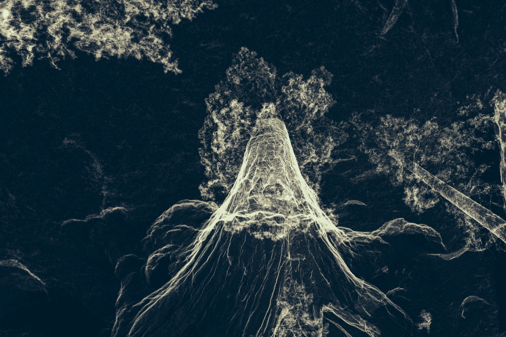
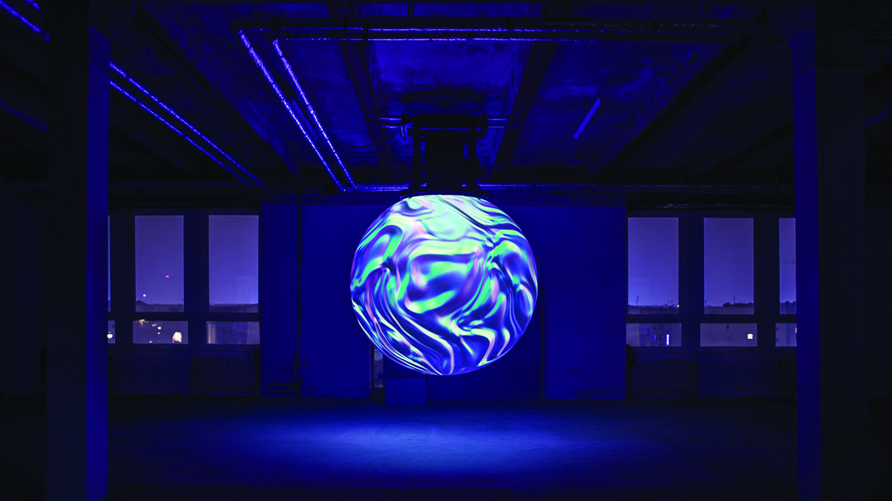

Enter the Writers
Graceful Degradation
By Kaweh Modiri
Cinekid's MediaLab is a playing field. Here, the makers on the frontlines of technological creation are producing visually spectacular artworks that react to sound, movement, light, air or touch. You can cuddle with a tree, or marvel at a mysterious interactive projection screen in the form of a globe. New interactions continuously take place between the visitor and the work, creating a unique story. Yet there is a story behind the stories. That story is about the development of intelligent machines.
My thoughts on this subject, as well as my approach to such interactive art, cannot be viewed in isolation from my own work as a writer and filmmaker. I enjoy challenging my role as creator by adding elements over which I have little or no control. This sets up a relationship between authorship and chance, between control and irreversibility. I strive to articulate my human experience through my work, which becomes more accurate and more personal. The urgency to express myself stems from a feeling of human inadequacy; willing, but not able to do more.
My film Bodkin Ras,1 set in the Scottish town of Forres, makes use of both actors and documentary characters. One of these characters is Eddie, a local Scot who drinks away his days in the Eagle Bar. His sons both hung themselves at a young age. When we hear Eddie speak in interview form he talks about how he longs for change. The first step would be to stop drinking, but his desire remains abstract. We see him entering the same pub every morning, and he is drunk before noon.
In my eyes, the fact that Eddie does exactly what he doesn't want to do every day and is fully aware of it makes him very human. His story resonates with the abstract desires of the spectator because it's so recognizable. And despite the fact that everything we see points to the opposite, there is nevertheless hope. The film ends with the words: “I will try.”
Such paradoxes are not strange for humans. We often want one thing, yet we do something else. We try although no one has said that we will succeed. And then try to heroify our failure and make it into a meaningful narrative, packaging it as a sign of our intransigence. And our failure is never a permanent failure, because hope always glimmers on the horizon; if there is one thing that nobody can take away from us it is our hope.
The glorification of impotence
I participate fully in this paradox as a filmmaker and storyteller. I am convinced that regardless of our place in the whole, our human experiences are worthy of articulation. Why? Because we happen to be the only ones who undergo these unique experiences and are able to express and convey them to our contemporaries and future generations.
I have recently started to wonder if there might be 'more'. A human mission to further evolve into better beings with greater self-knowledge and capacity. Artificial Intelligence that -- unlike me -- doesn't need to hide behind the glorification of human inefficiency and impotence.
In his book Superintelligence, philosopher Nick Bostrom explains that humans are dominant due to their intelligence. Other animals have stronger claws or jaws, but humans have better brains. This has enabled us to develop language, technology and complex social structures. But, Bostrom asks, what if machines are built that are smarter than us? This new superintelligence would become very powerful. Just as the fate of the gorillas now depends more on us humans than on the gorillas themselves, human destiny would become dependent on this superintelligence.
How should we think about a world in which human interests no longer have the highest priority? Where technological progress and innovation would not be (primarily) at the service of humans? Would an AI that does not struggle between its inner world and its outer presence have the need to write novels? That is doubtful. Drama belongs to humans. To think about an intelligence that is not characterized by failure is also to think about the end of our human narrative.
Keep running
We are far from this point. The technology is still ours, and we control the playing field. The champagne will flow: the exhibition is open, as colourful and vibrant as fireworks. The hair is curlier than usual. There is running, playing and building. I observe children who have been raised with love, and hope that they will not later push me off the roof. I make a note to my future self in a little notebook:
There is no fort to defend. The surrender is complete. I am virtually present in many places; sensational impulses shoot through my brain. Existence is fragmented and abstract. Keep running, keep breathing. Time can multiply infinitely in this inhuman orbit. Keep running. Sooner or later it will be there. It won't be long. Keep breathing. It will be heavenly.
stow away my notebook and begin my journey through the MediaLab. The first piece that strikes me is Treehugger, a project by the London-based design agency Marshmallow Laser Feast, commissioned by Cinekid, STRP, Southbank and Migrations. It is a Virtual Reality installation of a sequoia, a tree that can grow to enormous proportions. The harder you hug the tree, the further you can penetrate its different layers to experience what is living and moving inside. The body is an essential part of this experience: if you don't touch anything, not much will happen. So not only do you see this work, you undergo it physically.
The creators say they want to bring people closer to nature with this piece. In their previous VR installation In the Eyes of the Animal, they also played with the human yearning for nature, with which most people come less and less often into contact. In this VR experience, the spectator looks through the eyes of a bird, flying through the layered video scan of a forest, or is a snake crawling over leaves. Instead of VR goggles and separate earphones, Marshmallow Laser Feast created a large helmet so that the viewer is even more isolated from the real world and can fully merge with the experience of an animal in nature.
These artworks prove that the experience of nature can be simulated via technology. Treehugger is not a substitute for the original sequoia: in the VR version we can penetrate the different layers of the tree, something which is not possible with a real tree. Through the seclusion provided by VR goggles and headphones, the experience feels authentic and unique because you're the only one having it at that moment. We often associate this authenticity and seclusion with (being in) nature.
Like an animal
Although Studio Toer's Fiet does not simulate nature, it moves as a living organism and reacts to the viewer. It hangs overhead like an animal and consists of many cones, the points of which move against each other and even split apart. It has sound sensors to catch changes in volume. With sudden noises it shrinks inwardly, as if scared. It breathes, moves organically and appears to relate to us emotionally. It is not only visual, but also a physical experience of the fading line between what lives and what does not.
I grab my notebook in a dimly-lit, secluded corner of the Factory Hall and ask myself what these works say about humans in the existential sense. Because it is not only machines that are programmed to mimic nature. Humans are programmed to embrace a new nature. It is the language that is being developed: a technological reproduction of nature that can evoke an experience and effect similar to -- and perhaps even extending further than -- 'real' nature.
As more and more data becomes available, sensors become more sensitive, processors accelerate, and materials and mechanisms are improved and refined, an increasingly articulated vocabulary for this new nature is arising. We learn to read, understand, and accept her. And in turn, the machine learns to better analyse, predict and manipulate people.
More stimuli
Technological developments allow us to tell our stories in a different, more sophisticated way than was possible in the past. Developments in the industry focus mainly on viewer experience enhancement. Numerous developments, including VR, are still in their infancy. The film industry in particular is looking at developments that aim to make the illusion even stronger and the viewing experience even more all-embracing. It seems that we need more and more stimuli in order to be able to believe the illusion. Not only must the nasty man before our eyes be repulsive in appearance, but we must also be able to smell him. We no longer want to look at a screen, we want to stand inside it. But watching a James Bond movie in VR is not the most astonishing development. The influence of the disappearance of the fourth wall (which preoccupied theater makers in the middle of the last century)and the projection techniques on the spectator's individual experience offer possibilities that are even more far-reaching.
Nick Verstand makes use of ones of these possibilities. His work Anima hanging in the MediaLab is a large sphere upon which pixels are projected from the inside. The pixels are interactive: sound and image emerge in real time through interactions with the viewer. The original distance from screen to spectator is blurred. Anima reacts to the audience with a variety of audio-visual communications, giving it the appearance of an autonomous object. The screen is no longer something we just sit and watch, but something we can now also walk around. The story is the relationship between humans and intelligent objects.
Curious objects
The works in the MediaLab show us that we can enter into relationships with objects that are characterised by their behaviours, and which in turn show a curiosity about our behaviour. We learn a new language that emerges from experience.
It is unclear how long humans will remain the central factor in this experience. We can establish that AI is becoming more intelligent, and will surpass human intelligence in more and more areas. The pioneers of AI, according to Bostrom, have been so focused on the possibility of human level Artificial Intelligence, that they have barely contemplated greater than human level AI. I may still experience the physical mixing of humans and AI during my lifetime. And then, step by step, there will be less and less human and more AI. Methinks that a new creature will emerge. The next evolutionary step.
But that does not mean we cannot play and experiment, and it does not relieve us of the necessity of examining our existence as human beings in relation to changing technology. On the contrary: the urgency is only greater. Rather than coming up with appropriate hairstyles and outfits for the AI that will administer our lethal injection, we can explore new areas with a spurt of inquisitiveness, develop new languages, and transfer our curiosity, playfulness and sensitivity to the next specimen.

Treehugger, Marshmallow Laser Feast, VR technology
 Treehugger, Marshmallow Laser Feast, VR technology (1) See: Link
Back